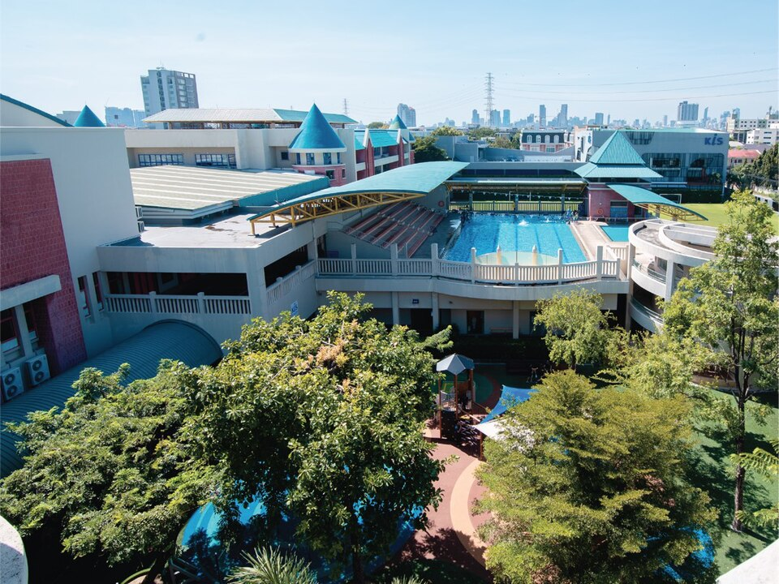

KIS 인터내셔널 스쿨(방콕) 캠퍼스 · 사진: Manit19 / Wikimedia Commons, CC BY-SA 4.0
KIS 인터내셔널 스쿨(KIS International School, 방콕) — IB 네 과정을 모두 갖춘 도심 학교
⚠️ 이름이 겹칩니다. 이 글의 KIS 인터내셔널 스쿨은 태국 방콕의 학교입니다. 서울 개포·판교의 한국외국인학교(Korea International School)도 약칭이 KIS라 검색 결과가 섞입니다. 국내 KIS는 한국외국인학교 가이드에 따로 정리해 두었습니다.
1. 어떤 학교인가
· 개교 — 1998년 방콕에 문을 연 것으로 알려져 있습니다.
· 위치 — 방콕 후아이콰앙(Huai Khwang) 구의 케시니 빌(Kesinee Ville) 주거단지 안에 캠퍼스가 있는 것으로 안내되고 있습니다. 방콕 국제학교 중에서는 드물게 주거단지 안쪽에 자리합니다.
· 교육과정 — IB 월드스쿨로, PYP(초등) · MYP(중등) · DP(디플로마) · CP(진로 연계) 네 과정을 운영하는 것으로 알려져 있습니다.
· 캠퍼스 — 약 4에이커 규모의 단일 캠퍼스로 안내되며, 과학 실험실·미술 스튜디오·블랙박스 극장·25m 수영장·체육관 등을 갖춘 것으로 소개되고 있습니다.
※ 학비·정원·재학생 수·합격률처럼 해마다 바뀌는 수치는 이 글에서 다루지 않습니다. 개설 과정도 바뀔 수 있으니 학교 요강을 직접 확인하세요.
2. 핵심 — "IB의 끝은 디플로마 하나"가 아닙니다
한국 학부모님들께 IB는 대개 디플로마(DP) 한 단어로 들어옵니다. 여섯 과목에 소논문(EE)·지식이론(TOK)·CAS를 얹는 그 과정입니다. 그런데 IB에는 고등 마지막 2년을 담는 과정이 하나 더 있습니다. CP(Career-related Programme)입니다.
· DP — 여섯 과목 + 핵심 세 요소를 전부 채우는 구조. 학문형 진학을 전제로 설계돼 있습니다.
· CP — 디플로마 과목 일부를 들으면서, 여기에 진로 분야의 학습과 CP 고유의 핵심 요소(진로·직업 역량, 봉사 학습, 성찰 과제, 언어 개발)를 함께 이수하는 구조로 알려져 있습니다.
왜 이게 선택지가 되느냐면, 모든 아이가 DP의 여섯 과목을 동시에 끌고 가야 하는 것은 아니기 때문입니다. 하고 싶은 분야가 이미 또렷한 아이, 혹은 DP 전 과목을 한꺼번에 감당하면 오히려 전부 무너지는 아이에게 CP는 "덜 하는 길"이 아니라 "다르게 채우는 길"이 됩니다. 방콕에서 이 선택지를 한 학교 안에서 함께 볼 수 있다는 점이 이 학교의 실질적인 특징입니다.
🔎 다만 꼭 확인하실 것. CP 이수자의 대학 지원 자격은 나라와 대학마다 인정 범위가 다릅니다. 목표 대학이 정해져 있다면 그 대학의 요건을 먼저 확인하고, 학교에는 올해 CP가 실제로 개설되는지, 어떤 진로 분야가 열리는지를 물어보셔야 합니다. CP에 대한 더 자세한 설명은 JIS 국제학교(자카르타) 가이드에 정리해 두었습니다.
3. 방콕 다섯 학교 비교 — 우리 집 기준으로 고르기
방콕은 선택지가 많은 도시입니다. 이제 이 사이트에 다섯 곳의 개별 가이드가 모였으니, 옆에 놓고 보시면 판단이 빨라집니다.
| 항목 | KIS 인터내셔널 | NIST | ISB | 방콕 파타나 | 해로 방콕 |
|---|---|---|---|---|---|
| 계열 | IB 월드스쿨 | IB 월드스쿨 | 미국식 | 영국식 | 영국식(해로 계열) |
| 개교 | 1998년 | 1992년 | 1951년 | 1957년 | 1998년 |
| 마무리 과정 | IB DP 또는 CP | IB DP | 미국식 졸업장 + AP·IB 선택 | IGCSE → A-Level | IGCSE → A-Level |
| 캠퍼스 성격 | 주거단지 안 소규모 (후아이콰앙) | 시내(수쿰윗) | 교외 대형 (니차다타니) | 교외 대형 | 교외 대형 (돈므앙) |
| 기숙 | 통학 | 통학 | 통학 | 통학 | 통학 + 기숙 |
| 자세히 | 이 글 | NIST 가이드 | ISB 가이드 | 파타나 가이드 | 해로 방콕 가이드 |
※ 각 학교의 개설 과정·캠퍼스 운영은 바뀔 수 있습니다. 지원 전 학교 요강을 직접 확인하세요.
표를 세로로 읽지 마시고 가로 한 줄만 보세요. 집이 시내에 잡힐 예정이면 캠퍼스 성격 줄이, 아이가 이미 고등 학년이면 마무리 과정 줄이 먼저입니다. 방콕 도시 전반의 사정은 방콕 국제학교 수학학원·영어학원 vs 과외에 정리해 두었습니다.
4. 한국(주재원) 학생·학부모가 겪는 어려움
· PYP·MYP에서는 "진도"가 보이지 않는다. IB 초·중등은 단원별 진도표 대신 탐구 단원으로 굴러갑니다. 아이가 지금 뭘 배우는지 부모님이 잡기 어렵고, 그래서 문제가 늦게 발견됩니다. → NIST 가이드의 MYP 설명 참고
· 점수가 시험이 아니라 기준표에서 나온다. MYP·DP 모두 루브릭(기준표) 채점 비중이 큽니다. 답을 맞혔는데 점수가 낮은 일이 반복되면 아이가 먼저 지칩니다. → 성적표 읽는 법
· 수학은 계산이 아니라 용어와 서술에서 막힌다. 한국에서 이미 배운 단원인데 알지브라·지오메트리 용어가 영어라 못 푸는 경우가 흔합니다. 풀이 과정을 적지 않으면 단계 점수를 받지 못합니다.
· DP냐 CP냐를 G10에 가서야 처음 듣는다. 선택을 코앞에 두고 급하게 정하면 과목 조합이 꼬입니다. 늦어도 G9~G10에 한 번은 가족이 이야기를 맞춰 두셔야 합니다. → 진학 카운슬러 활용법
· 영어 지원의 범위를 모른다. 학교마다 EAL 지원 학년과 조건이 다릅니다. 편입 학년에 따라 지원을 받지 못하는 경우도 있습니다. → EAL(영어 지원 프로그램) · Learning Support
· 작은 캠퍼스의 장단점을 한쪽만 본다. 통학이 짧고 아이를 살피는 눈이 가까운 대신, 운동장과 시설 규모는 교외 대형 캠퍼스와 다릅니다. 방과후·클럽의 폭이 아이에게 중요한 집이라면 직접 보고 판단하셔야 합니다. → 방과후·클럽(ECA/CCA) · 오픈데이·학교 방문 준비법
5. 그래서 이렇게 준비합니다
🧭 먼저 — 고등 마무리 과정을 한 줄로 적어 본다
"우리 아이는 DP로 간다" 또는 "CP도 열어 둔다" 중 하나를 가족이 먼저 적어 보세요. 정답을 고르라는 뜻이 아니라, 정해 두면 G9~G10에 들을 과목이 달라지기 때문입니다. 이 한 줄이 있으면 학교 상담에서 물을 것도 분명해집니다. → 국제학교 입학 준비 총정리
📖 영어과외 — 회화가 아니라 "기준표를 읽는 영어"
IB에서 점수를 가르는 것은 지시어입니다. describe·explain·evaluate·justify 가 각각 무엇을 요구하는지 모르면, 내용을 알아도 항목 점수를 받지 못합니다. 아이의 실제 과제와 학교가 준 기준표를 나란히 놓고 한 항목씩 맞춰 보는 연습부터 합니다. (영어 공부법 참고)
📐 수학과외 — 아는 개념에 영어 용어를 다시 붙인다
한국식 풀이를 버리지 않고, 그 위에 영어 용어와 영어로 쓴 풀이 과정을 얹습니다. DP 수학은 AA·AI 두 갈래라 선택 자체가 성적을 좌우하므로 G10 안에 방향을 잡는 편이 좋습니다. (IB DP 점수 완전정복 · 알지브라 공부법 참고)
📝 편입이라면 — 이전 학교 기록부터 정리한다
IB 학교 편입에는 이전 학교 성적 기록·담임 소견·입학 평가가 함께 들어갑니다. 특히 MYP 중간 학년 편입은 기준표 채점이 처음이라 한 학기가 통째로 적응기로 지나가기 쉽습니다. → 편입·전학 총정리
6. 방콕의 강점 — 시차 두 시간의 화상과외
방콕은 한국보다 두 시간 느립니다. 방콕 오후 4시가 한국 오후 6시라, 아이가 학교를 마치고 집에 도착한 시간이 한국 강사진의 저녁 수업 시간과 잘 맞습니다. 주말에 몰아서 하지 않고 평일 저녁에 짧게 여러 번 가는 방식이 가능해집니다. 방콕에도 학원은 많지만 IB 기준표에 맞춰 아이의 과제를 같이 봐 주는 곳은 생각보다 적습니다. 아이의 실제 과제 파일과 학교가 준 기준표를 화면에 놓고 "어느 항목에서 깎였는지"부터 확인하는 방식이 가장 빠릅니다. 방콕 지역 사정은 방콕 국제학교 과외에 정리해 두었습니다.
정리
KIS 인터내셔널 스쿨은 1998년 개교로 알려진 방콕 후아이콰앙의 IB 월드스쿨이고, PYP·MYP·DP·CP 네 과정을 갖춘 것으로 안내되고 있습니다. 주거단지 안의 작은 캠퍼스라 통학이 짧고, 고등 마무리에서 DP 외에 CP라는 길을 한 학교 안에서 볼 수 있다는 점이 이 학교를 고르는 실질적인 이유가 됩니다. 반대로 넓은 운동장과 대규모 방과후를 우선하신다면 교외의 큰 학교가 맞습니다. 30분 무료 상담으로 우리 아이에게 어느 쪽이 맞는지부터 함께 짚어 보세요.